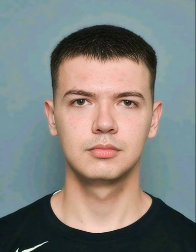

About Me

Proactive software engineer with strong communication skills and a solid foundation in software development. Experienced in building scalable solutions, automating workflows and applying modern programming practices in real-world projects. Currently studying Computer Software Engineering at Sofia University "St. Kliment Ohridski" while continuing to grow through hands-on projects, competitive programming on LeetCode and ongoing courses in cloud, DevOps and business.
Education
Sofia University "St. Kliment Ohridski"
2023 - 2027Bachelor's Degree, Computer Software Engineering
Software University (SoftUni)
2020 - 2022Python Full-Stack Developer, Computer Software Engineering
Math High School "Acad. Kiril Popov"
2015 - 2023Computer Programming / Programmer, General · Grade: 6.00
Telerik Academy School
2015 - 2017Programming fundamentals and competitive informatics